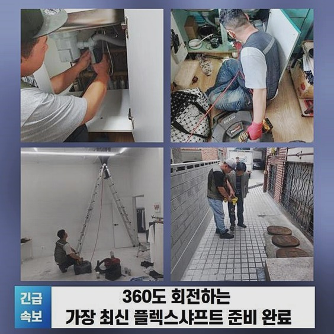
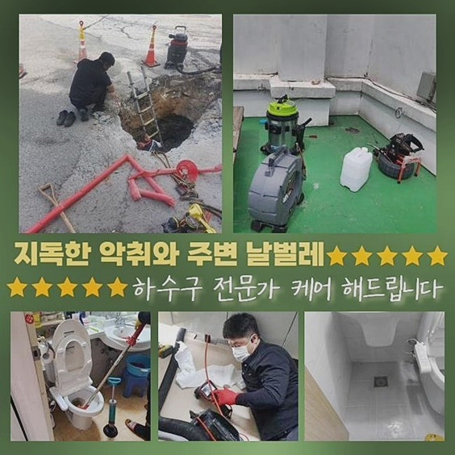
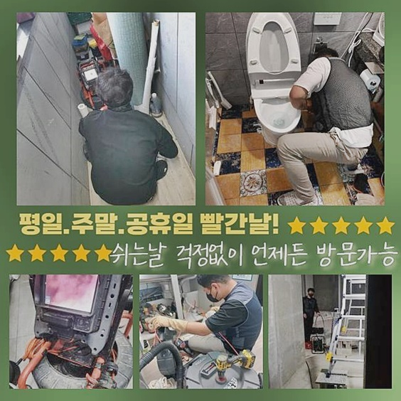
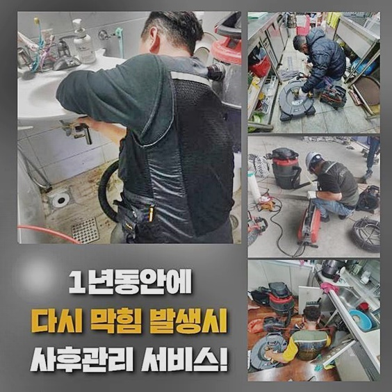
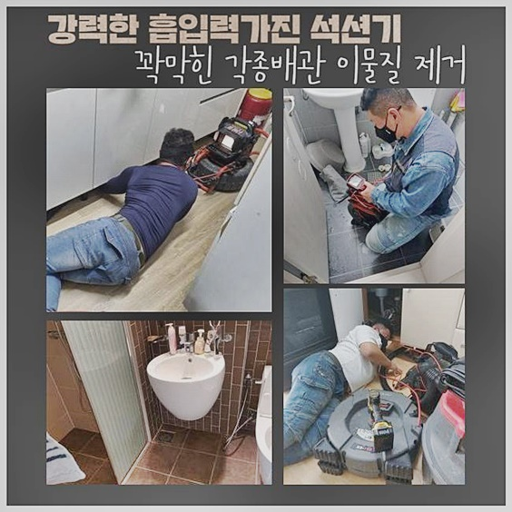

🏠 관악구 신림동화장실하수구역류 미성동 하수구뚫는업체 부속수리
용인시 처인구 배관막힘 전문 시공 후기

📋 작업 개요
- 위치: 용인시 처인구, 수원시 영통구, 화성시 동탄
- 서비스 유형: 배관막힘, 누수수리, 고압세척, 내시경점검
- 작업 일시:
- 업체명: 하수구수사대 (010-5615-2118)
🔍 문제 상황
관악구 신림동화장실하수구역류 미성동 하수구뚫는업체 부속수리
갑작스럽게 배수관에서 고장이 나타났던 때가 존재하셨을 것이라 판단하는데요
가정내에 설비된 파이프가 물이 유출되는 상황이 되어 파이프 뚫음을 이행해보신 증험 역시 간접적으로나마 있을 것으로 보고 있는데요
파이프 내부로 찌꺼기들이 들어가면 초기 1~2년 정도는 무방하겠지만 계속적으로 적층된다면 정체가 일어나게 되는거죠
욕실을 이용하지 못한다면 삶의 질 하락 속도가 증가하게 돼요
차단이 생겨난 파이프를 해결해보고자 막대기도 사용해보고 슬러지 전용 약품까지 반영하였는데도 해결이 안된다면 욕실 하수관 개문 전문인에게 조속히 연락해 수리받으실 것을 권해드립니다
방관은 외려 막힘을 나빠지게 할 수 있다는 점 등을 놓치시면 안돼요
금번에는 파이프 세척과 관련한 지식들과 갑작스러운 막힘의 상황 속에서 제대로 대응하는 방안을 안내드릴 것입니다
요번에 방문한 현장처럼 고장으로 난관에 봉착해있다면 심도있는 처치가 요망돼요
말씀드릴 내용은 공장 사장님의 촉박한 요구에 부응하여 즉각 내방드렸던 곳이예요
업체의 주차장쪽에 설비돼 있는 하수구가 차단되어 본업무에 어려움이 있었답니다
바로 확인해 보아더니 관 자체가 깊숙이 있었고 차단된 지점도 격원했어요 처치가 순탄지 않을 것이라는 점을 예측할 수가 있었죠
즉각적인 도움을 드려야 하였기에 배수관의 일부분을 절제하기로 하였습니다

🔎 원인 분석
💡 전문가 진단: 정밀 진단 장비를 사용하여 슬러지의 고착 여부를 판명하고 타격/세척 작업을 실시했습니다.
배수가 안되고 있으므로 내부를 볼 수 없는 사태였어요
그래서 정밀한 막힘 원인 규명이 불가하므로 내시경cctv를 통하여 내측을 확인해 보도록 합니다
안에 이물들이 매우 많았어요 살펴보니 유분 덩어리였습니다
건물관리자께서 세척 용액을 써보기도 했지만 변화는 없었다 하시더라고요 관 내의 유동성이 멈추었을 정도로 기름덩이가 전체를 차지하고 있는 모양새였어요
배관전용cctv 촬영모습을 종합해 보니 맨홀부근에서 시관로에까지 연결된 곳이 차단되어 물을 쓰게되면 넘쳐나고 있던 거였죠
계산했던 것보다 넓은 부분에서 굳어진 노폐물들로 잔뜩 막혀버린 상황이었죠
제품을 생산하는 곳이다보니 유류찌꺼기에 연유한 덩어리들이 상당해보였어요
관리자분께 가운데의 배수구를 타공하는 게 조속한 처치를 위해 필요하다고 설명하고 구체적인 내용을 안내 후 업무에 들어갔답니다
전체적인 업무와 관련한 재가를 받은 뒤 공장내부의 파이프에서부터 밖의 시관로를 소제하였어요
상당히 긴 구간에 걸쳐 막혀 있었기에 선제적인 작업을 마친 후엔 공장 내부로 이어진 배관도 적절한 공구류들을 써서 처치해야 하죠
이 경우엔 고속분쇄용기기를 투입해야 하는데요 이 기계는 머릿부분의 쇠사슬이 회전해나가며 내부에 적층된 이물들을 없애는 노릇을 하고 있어요
가끔가다가 의뢰인께서 고속으로 돌면서 관에 문제가 생기지 않을까 근심할 때도 있으신데요
미숙한 능력을 토대로 주먹구구식으로 가동한다면 그러한 상황이 일어나기도 하겠지만 저희처럼 숙련성을 갖춘 이들에겐 포함되지 않는 다는 것을 말씀드려요
배관카메라로 내측을 검진하면서 막힘이 가중된 부분과 동기를 파악한고 본시공에 돌입하였죠

🔧 작업 과정
일터에서 배출되는 탁수에 들어간 잔재들이 가뜩이 차 있는 상태였어요
샤프트기기를 이용해 이물질을 해체하는 것을 바라보시고는 묵은 체증이 내려가는 것 같다고 이야기 하시더라고요
조치하여야 하는 영역이 컸지만 타공부분을 기점으로 해서 꼼꼼히 세정을 실시했답니다
해당 지점에서는 기름을 쓸 수밖에 없으며 다양한 변수에 근거해서 슬러지가 뭉치기에 관리 시스템이 작동된다고 하여도 역류 및 악취 발생이 생기는 거예요
지저분한 것들이 청소되자 보통이 아닌 작업인 것 같다면서 부르길 잘 했다고 하셨어요
시설 안에서 물이용을 할 수 없는 모양새가 되버린 것은 야외에 매립되어 있는 파이프에서 정체가 발발하였기 때문이예요
이러한 문제가 생겨나 버린다면 직원에게도 불편을 초래하죠 각종 쓰레기들이 눈으로도 나타날 정도로 상당하게 적체되어 있었죠
오랜 시간 세척관리를 하지 않았다고 이야기해 주셨어요
그래서 배수구를 통해 갖가지 이물들이 적체되었다는 것을 알아챌 수 있었어요
건축물 자체가 낙후되었기에 배수관 역시 낡게 되었을 가망이 높죠
시설이 노후화되는 부분도 막힘이 발생할 때 심화될 수 있다는 점을 잊지 말아야 합니다
잔재들이 점층적으로 누적되면 물의 흐름을 방해하게 되어 배관부속에도 타격을 줄 수 있고 부식이 생겼었던 곳에서는 누수가 나타나기도 해요
배관 안의 잔재들은 샤프트기기를 이용해서 넉넉히 처리할 수 있었으므로 별도의 물세척은 이행할 필요가 없었어요
다만 샤프트 기기를 통해 찌꺼기를 말끔하게 없내는 일을 속행해 나갔죠
배수구청소가 평상시 되지 않았다면 쉽게 막혀버릴 수 있고 물이 역행할 수도 있답니다
빠르게 고인물이 빠져나가지 못하고 평시와 다른 느낌이 든다면 재빨리 전문가를 수소문하여 의뢰하실 것을 권합니다
한번 정체가 생겼던 데는 다른곳에 비교해서 상황이 비경해질 가망성이 커요
빠른 해결에 초점을 맞추는 것도 중요하겠으나 훌륭한 기술자를 수문하는 일도 불가결합니다
기술수준과 업력과 관계된 부분은 필수적으로 검토해보시길 바라요
충분한 경력과 제반설비 이것에 부합한다면 고난도의 막힘이 발발하였어도 처치해낼 수 있어요
저희팀은 통수작업이 알맞게 진행되도록 첨단 공구류를 이용하고 있어요
현장상황에 최적합한 장비들을 쓸수 있게 석션장비를 비롯한 기구들을 맞춘 다음에 공사현장으로 이동하고 있어요


✅ 작업 완료
잔재들을 떠다미는 대책으로 일을 속행하고 내시경cctv를 동시에 넣어서 안에 슬러지 덩어리들이 잔류하고 있지는 않은지 보고 세척을 이행하죠
이런 방식으로 뚫음을 해보시면 노폐물이 고착화되는 상황을 방지할 수 있기에 다시 막혀버리는 문제는 거의 없다고 생각하셔도 무방합니다
갖가지 기름때와 찌꺼기가 전부 소멸되었어요
특징적인 트러블이 발발하지 않았더라도 사전에 방예하는 시공을 받아보시는 경우도 많아요
의뢰인분께서 편하신 시간에 맞춰 진단 및 방문을 해드리며 토요일에도 정상적으로 일하고 있으니 고심하지 말고 문의해 주세요
방관시하지 마시고 이상현상이 나타나면 즉각 수선하시는 걸 권해드리는 바입니다


⚠️ 하수구 배관 막힘 예방 및 관리 가이드
- ✅ 머리카락, 비닐, 물티슈 등 물에 분해되지 않는 이물질은 절대 흘려보내지 마세요.
- ✅ 기름기 많은 식기는 설거지 전 키친타올로 먼저 기름때를 닦아내세요.
- ✅ 주기적으로 배수구에 뜨거운 물을 가득 부어주어 유지방 고착을 방지하세요.
- ✅ 작업 후 1년 이내 재발 시 무상 A/S 보증 서비스를 제공합니다.
💡 핵심 정리
- 확실한 장비 작업(내시경 점검 및 샤프트 스케일링)으로 원인을 뿌리 뽑습니다.
- 작업 후 1년 이내에 동일한 부위 재발 시 100% 무상 A/S 서비스를 보장합니다.
- 서울 · 경기 · 인천 전 지역에 24시간 언제든 긴급 출동할 수 있도록 항시 대기 중입니다.
❓ 자주 묻는 질문 (FAQ)
🚨 용인시 처인구 배관막힘 문제로 고민이신가요?
정확한 원인 진단과 확실한 시공으로 재발 없는 해결을 약속드립니다.
24시간 긴급 출동 | 서울 · 경기 · 인천 전지역 | 1년 내 재발 시 무상 A/S